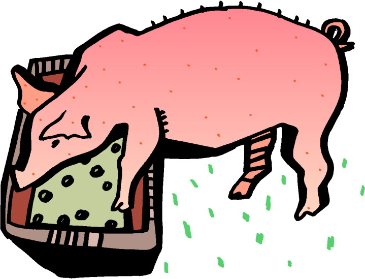

All Recipes
My Signature Slop

Description
My Signature Slop is a suprisingly cheap and healthy meal, though its suspicious appearance seems to strike concern and disapproval from my peers, hence the name Slop. I made the recipe myself!
Ingredients
- 2 Eggs
- 5 Handfuls of Oats
- 2 Handfuls of Peanuts
- 3 Handfuls of Baby Spinach
- A guesstimate amount of water
Steps to Cook My Signature Slop:
- Crack the two eggs into a microwave-safe bowl and mix them
- Add the five handfuls of oats into the bowl
- Add water into bowl until bubbles form on top
- Mix ingredients together in bowl
- Adds peanuts to bowl and mix again
- Place bowl in microwave for 3 minutes
- Let it cool, then place spinach on top and enjoy!